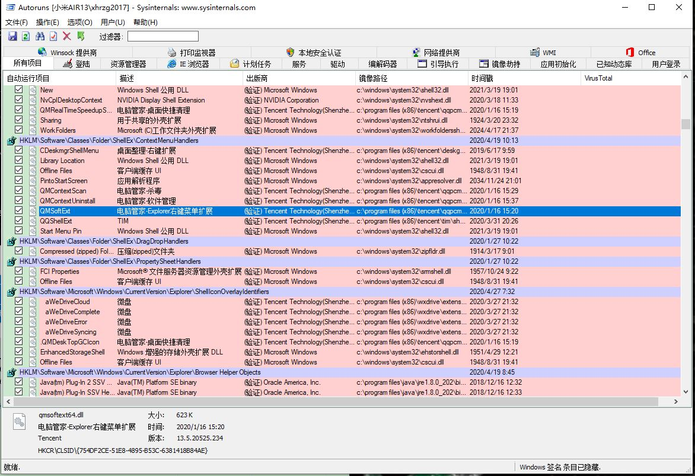

本文纯属举例各软件开发商请勿对号入座！
想让一款流氓软件开机启动有18种方法。除了360全家桶、百度全家桶、腾讯全家桶以外，如果经常用各种集成好的ghost系统的用户，一定都碰到过大名鼎鼎的2345全家桶，这才是流氓软件里面的战斗机。
线上不安装不怕我们线下有门店。电脑维修店：“这系统不行了重装系统吧。”
2345加速浏览器、2345安全卫士、2345看图王、2345王牌输入法、2345影视大全、2345好压、2345手机助手、2345阅读王、2345软件管家、2345天气王、2345上网导航 前来报道
有没有病毒不就说，后台吃CPU一个核，问你惊不惊喜意不意外。要是一不小心安装了2345全家桶的软件，就像虎皮膏一样，药撕都撕不掉。
第一步Autoruns去开机权限
不管开机还是右键选中要删除的权限一个 Delete 就完了，重启后就没有权限了，再见……不不永别了2345.